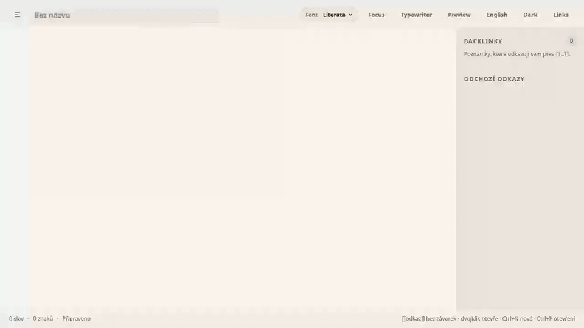
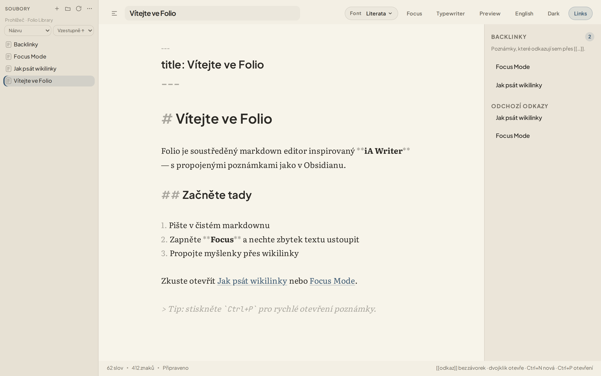
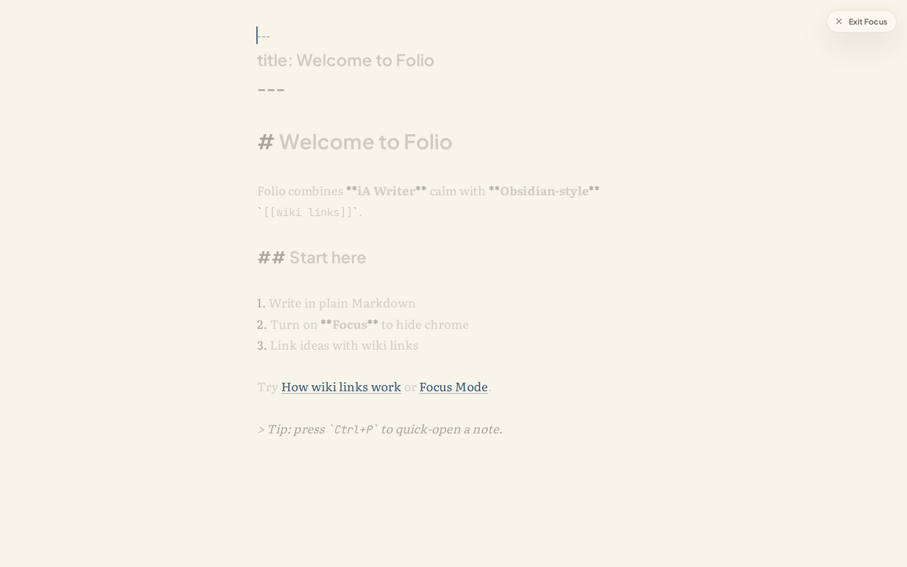
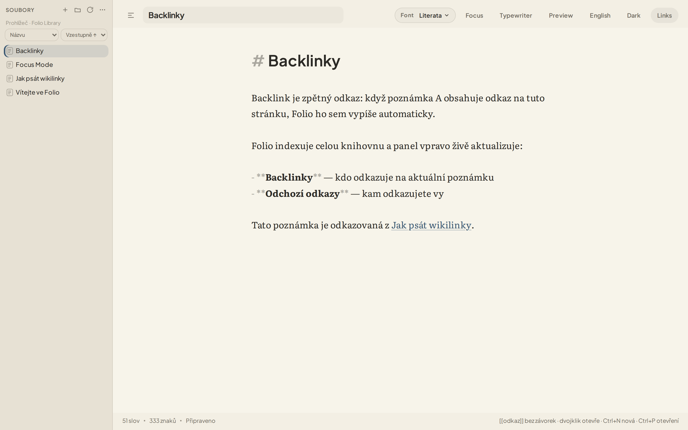

Klidný Markdown editor pro Windows (a PWA pro iPhone). Vzhled psaní čerpá z iA Writer; u zpětných odkazů Folio vděčí myšlence z Obsidianu — jde o vlastní aplikaci, ne náhradu těchto nástrojů.

[[wiki odkazy]], doplňování a panel
vstupních/odchozích odkazů. Ne graf, ne pluginy.
.md (na webu export/import). Vestavěná synchronizace v aplikaci
není — složku dejte do OneDrive, iCloud Drive nebo jiné syncované cesty a
soubory pojedou vaším cloudem.


